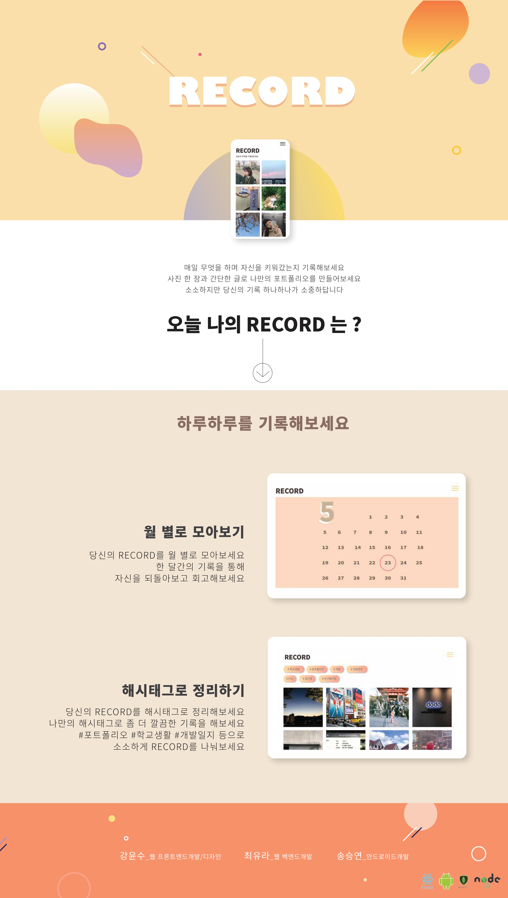

Record
3202 강윤수, 3217 최유라, 3610 송승연자신의 하루하루를 RECORD하고 미래의 포트폴리오를 쓸 때, 과거의 데이터들을 불러올 수 있는 포트폴리오 제작 도움 웹/앱이다.


Record
3202 강윤수, 3217 최유라, 3610 송승연먹팁
3112 이규빈, 3207 박혜정
고양이 가는 길
3210 신선영, 3217 최유라, 3617 홍은빈, 2116 이기쁨, 2216 최다연, 2203 박소원다정봇
3512 이수현, 3316 허수진, 한유리(졸업생), 이유리(졸업생)소심타파
3515 전세연, 3615 정효은읽기일기
3601 권현수, 3615 정효은, 3515 전세연미림 타자왕
3614 정준명